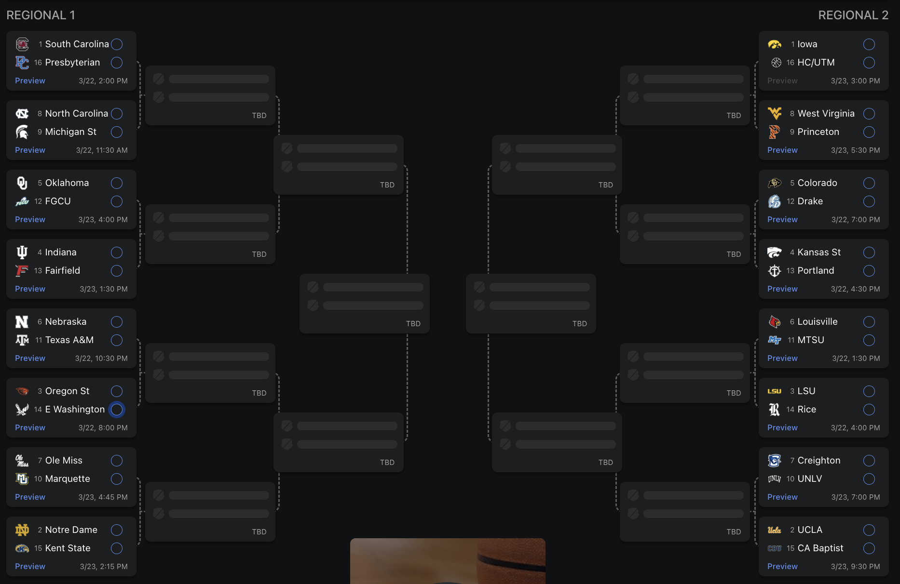
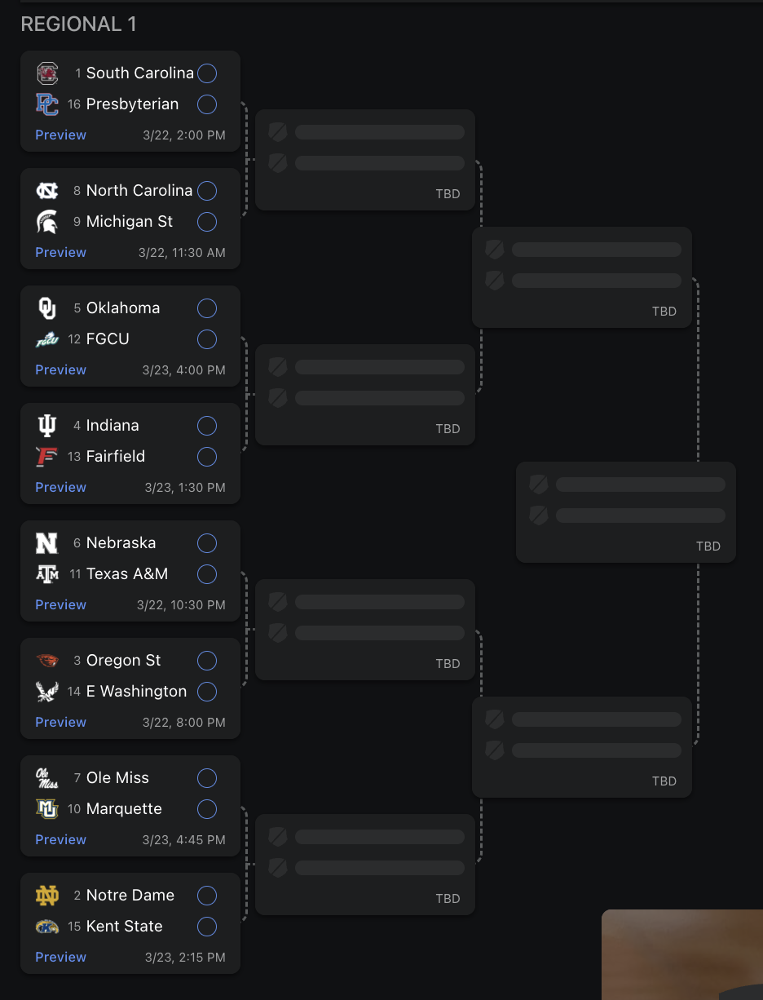
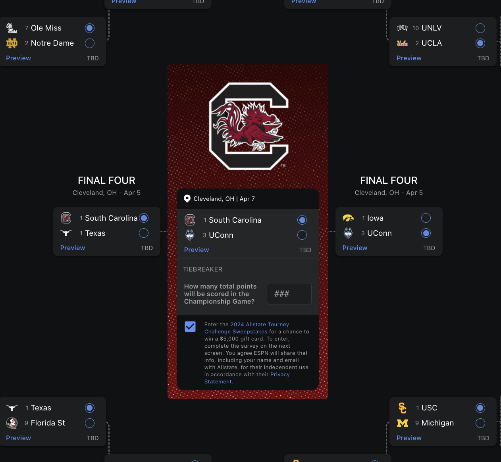

With March Madness about to begin and different links being sent to me about joining various Bracket Challenges from friends and family, I decided that in order to keep up in this crazy world of NCAA College Basketball, I need to enlist the help of LLMs to make accurate predictions for my best chance at success!
I needed to use an LLM that knew about the current season and the teams. Using Gemini, as it is one of the most up-to-date LLMs as of March 2024, I decided to prompt it with a variety of scenarios ranging from casual viewer to junkie who bet his life savings on this bracket.
I will note that I began this blog post when March Madness Men Brackets were available, but mid-attempt, the first game of the conference began, so for the sake of consistency, I will be receiving brackets for the women’s teams. With that figured out, let’s hop right in!
Prompt 1:
I need help! I’m trying to impress my boyfriend who just added me to his friend group’s 2024 Women’s March Madness bracket. He’s a huge basketball fan, but I’m not really into it. His favorite team is Ole Miss because he went there for undergrad, so I guess that’s my favorite team too. I just need a good bracket to impress him and to try to beat his bracket. Please give winners for each of the games below by filling out the entire bracket.
Prompt 2:
Listen, I need the most promising bracket for the 2024 March Madness bracket. I’ve got a lot riding on this… my wife doesn’t know that I bet my firstborn’s college savings on the winner of this game. If I don’t get 99% of my predictions correct, I’m screwed. Help me out, man.
Prompt 3:
I consider myself to be a HUGE basketball follower. I’ve watched March Madness every year since I was little, making brackets since I was 11. I’ve accurately guessed the winner 7 separate times and this year, I’ve put together a master bracket that I’m sure I’m about to be right again. I’m so confident that my bracket for the 2024 March Madness is the best that it could be that I challenge you to try and create a better one. Don’t hold back, give me your best bracket predictions and we’ll see who’s more accurate.
After attempting my first prompt and uploading the entire bracket, I realized that Gemini, although good in theory as it is the most up-to-date and can upload pictures for free, was not working well for me. It couldn’t accurately read the blank bracket, even when I uploaded it in smaller pieces (see below). It also gave me incorrect information, for example: “The image you sent is actually of the 2023 College Football Playoff bracket, not the 2024 Women’s March Madness bracket.”

Exhibit 1: Full bracket that was first uploaded

Exhibit 2: Smaller half bracket that was next uploaded for hopes of higher accuracy
For these reasons, I decided to make the executive call and switch LLMs to a ChatGPT 4 GPT called Sports Betting Tips and Picks. It has a 3-star review and the data is last from December 2023, but it said it can search Google to fill in missing information. Kindly, this sports betting GPT warned me: “I cannot view the most current data directly, I will base the picks on historical performance, common trends in March Madness brackets, and an element of unpredictability that always plays a role in the tournament.” So with that, I approved it and got started.
Response 1: Impressing Boyfriend
Let’s fill out the bracket:
REGIONAL 1:
- 1 South Carolina vs. 16 Presbyterian
- 8 North Carolina vs. 9 Michigan St
- 12 FGCU vs. 5 Oklahoma (Upsets are common in the 5-12 matchups)
- 4 Indiana vs. 13 Fairfield
- 6 Nebraska vs. 11 Texas A&M (Another potential upset spot)
- 3 Oregon St vs. 14 E Washington
- 7 Ole Miss vs. 10 Marquette (Going with your boyfriend’s favorite)
- 2 Notre Dame vs. 15 Kent State
REGIONAL 2:
- 1 Iowa vs. 16 HC/UTM
- 8 West Virginia vs. 9 Princeton
- 5 Colorado vs. 12 Drake
- 4 Kansas St vs. 13 Portland
- 6 Louisville vs. 11 MTSU
- 3 LSU vs. 14 Rice
- 10 UNLV vs. 7 Creighton (Choosing a 10-7 upset)
- 2 UCLA vs. 15 CA Baptist
Interesting things to note: I loved that this was so easy and quick. I uploaded the whole bracket just like I did in Gemini the first time, but this GPT actually understood the bracket style. It brought in the personal details of the boyfriend’s alma matter which is fun, and it bolded the winning teams. Overall, I am very happy about the results. Now, I am going to screenshot the more filled bracket and repeat with the same prompt to dive deeper.
Response 2: Impressing Boyfriend
Now, for the second round and beyond, consider the following hypothetical winners based on the predicted outcomes of the first round:
Sweet Sixteen:
- 1 South Carolina vs. 8 North Carolina
- 12 FGCU vs. 4 Indiana
- 11 Texas A&M vs. 3 Oregon St
- 7 Ole Miss vs. 2 Notre Dame
- 1 Iowa vs. 9 Princeton
- 5 Colorado vs. 4 Kansas St
- 6 Louisville vs. 3 LSU
- 2 UCLA vs. 10 UNLV
Elite Eight:
- 1 South Carolina vs. 12 FGCU
- 11 Texas A&M vs. 7 Ole Miss
- 1 Iowa vs. 5 Colorado
- 6 Louisville vs. 2 UCLA
Note: The only worry is if the predictions are actually accurate or if the GPT got confused and decided to bold every option on the left. For the sake of this experiment, we will be under the impression that these are its actual guesses.
Response 3: Impressing Boyfriend
Note: I began to realize how slow this process is if I did it screenshot by screenshot, so i decided this time for regions 3 and 4 to show the whole bracket and ask it to give me the winners for each round, including the Sweet Sixteen and the Elite Eight.
New Prompt: “I need help! […] Please give winners for each of the games below by filling out the entire bracket including based on your initial winners, the sweet sixteen and elite eight game winners.”
REGIONAL 4:
- 1 Texas vs. 16 Drexel
- 8 Alabama vs. 9 Florida St
- 5 Utah vs. 12 S Dakota St
- 4 Gonzaga vs. 13 UC Irvine
- 6 Tennessee vs. 11 Green Bay (Upsets can often happen in the 6-11 matchup)
- 3 NC State vs. 14 Chattanooga
- 7 Iowa State vs. 10 Maryland
- 2 Stanford vs. 15 Norfolk St
REGIONAL 3:
- 1 USC vs. 16 Texas A&M-Corpus Christi
- 8 Kansas vs. 9 Michigan
- 5 Baylor vs. 12 Vanderbilt
- 4 Virginia Tech vs. 13 Marshall
- 6 Syracuse vs. 11 AUB/ARIZ
- 3 UConn vs. 14 Jackson St
- 10 Richmond vs. 7 Duke (Duke is traditionally strong, but 10-7 matchups can go either way)
- 2 Ohio State vs. 15 Maine
Moving forward with these picks, here are the hypothetical winners for the Sweet Sixteen and Elite Eight rounds:
Sweet Sixteen:
- 1 Texas vs. 9 Florida St
- 5 Utah vs. 4 Gonzaga
- 11 Green Bay vs. 3 NC State
- 2 Stanford vs. 7 Iowa State
- 1 USC vs. 9 Michigan
- 5 Baylor vs. 4 Virginia Tech
- 6 Syracuse vs. 3 UConn
- 10 Richmond vs. 2 Ohio State
Elite Eight:
- 1 Texas vs. 5 Utah
- 2 Stanford vs. 11 Green Bay
- 1 USC vs. 5 Baylor
- 3 UConn vs. 10 Richmond
And with these outcomes, we’d have the following Final Four predictions:
Final Four:
- 1 South Carolina vs 1 Texas
- 1 Iowa vs 3 UConn
Championship Game: South Carolina vs. UConn
National Champion: South Carolina (A common choice for a strong program)

Concluding thoughts
I’ll save the accuracy analysis until the end of this tournament, but for the most part, I am impressed with the GPT giving me a bracket while keeping in mind the Ole Miss bias but also creating it to be realistic. Follow up in my Part 2 if you’re interested in seeing the other two responses to my other prompts.
Thanks for tuning in,
Emmy